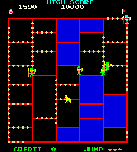

Amidar is an arcade game programmed by Konami and published in 1981 by Stern. Its basic format is similar to that of Pac-Man: the player moves around a fixed rectilinear lattice, attempting to visit each location on the board while avoiding the enemies. When each spot has been visited, the player moves to the next level. The game and the name have their roots in the Japanese lot drawing game Amidakuji. The bonus level in Amidar is a nearly exact replication of an Amidakuji game and the way the enemies move conform to the Amidakuji rules. A clone of this game was released for the Atari 2600, entitled Spiderdroid.
How to play~%joystick_table%~
| The player is opposed by enemies who kill on contact. The enemies increase in number as the player advances from one level to the next, but do not increase in speed. Their speed is always matched exactly to that of the player. On odd-numbered levels, the player controls an ape, and must collect coconuts while avoiding headhunters. On even-numbered levels, the player controls a paint roller, and must paint over each spot of the board while avoiding pigs. Each level is followed by a short bonus stage. Whenever a rectangular portion of the board is cleared (either by collecting all surrounding coconuts, or painting all surrounding edges), the rectangle is colored in, and in the even levels, bonus points are awarded. When the player clears all four corners of the board, he is briefly empowered to kill the enemies by touching them. The game controls consist of a joystick and a single button labeled "Jump," which can be used up to three times, resetting after a level is cleared or the player loses a life. Pressing the jump button does not cause the player to jump, but causes all the enemies to jump, enabling the player to walk under them. |
 |
Arcade Megawing controls
| Game Function | Physical interface | Image |
| Coin 1 | Up | |
| Coin 2 | Down | |
| Start 1 | Left | |
| Start 2 | Right |
Additional Information
Amidar Help on Papilio Arcade homepage